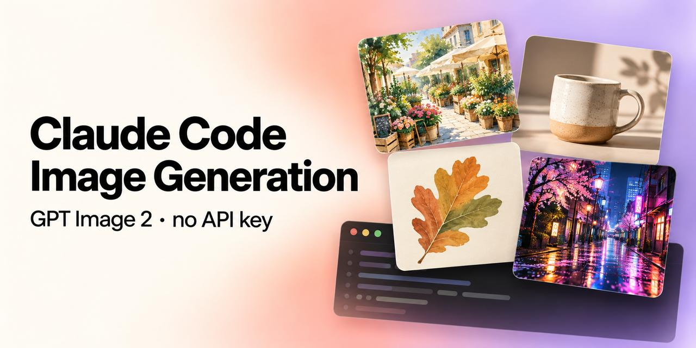

Claude Code image generation with GPT Image 2
A free, open-source Claude Code skill that lets Claude generate and edit images with OpenAI's GPT Image 2, using your ChatGPT subscription through the Codex CLI. You don't need an API key.
View on GitHub Install in 1 minute
Can Claude generate images?
Not on its own. Claude can read images, but it can't create them. With this skill installed, you ask Claude Code for an image and it writes the prompt, runs GPT Image 2 (gpt-image-2) through the Codex CLI, checks the result, and saves the file into your project.


How to install the skill in Claude Code
- Run the installer once. It installs globally for every project (
~/.claude/skills), installs the Codex CLI if needed, and signs you in with ChatGPT.curl -fsSL https://raw.githubusercontent.com/mishagavura/claude-code-image-generation/main/install.sh | bash
Prefer something else?npx -y github:mishagavura/claude-code-image-generation, or in Claude Code:/plugin marketplace add mishagavura/claude-code-image-generation. For one project only, add| bash -s -- --project. - Restart Claude Code.
- Ask for an image.
Generate a product photo of a ceramic mug on a light wood table
What you can make
Website hero images, product photos, illustrations, ad creatives, UI mockups, transparent stickers and icons, and up to 4 variants at once. You can also edit existing images (lighting, colors, removing objects) or match the style of a reference image.
FAQ
Do I need an OpenAI API key for GPT Image 2?
No. The Codex CLI signs in with your ChatGPT account, so images count against your ChatGPT plan instead of API billing.
Is GPT Image 2 free with this?
There's no extra cost beyond your ChatGPT subscription, but generations count toward your plan's usage limits.
How do I install skills in Claude Code?
A skill is a folder with a SKILL.md file in ~/.claude/skills/ (all projects) or .claude/skills/ (one project). The installer above handles it, or use /plugin in Claude Code.
Does it work in claude.ai or Claude Desktop chat?
It's built for Claude Code (terminal, desktop app, IDE extensions), which can run local commands. The web chat can't run the Codex CLI.